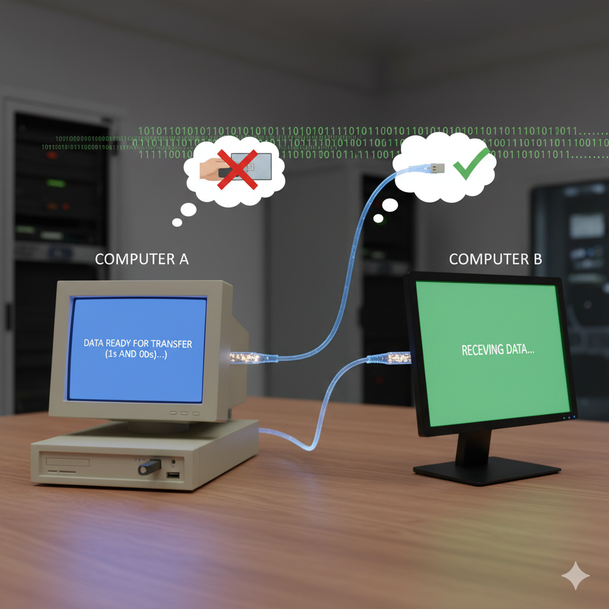
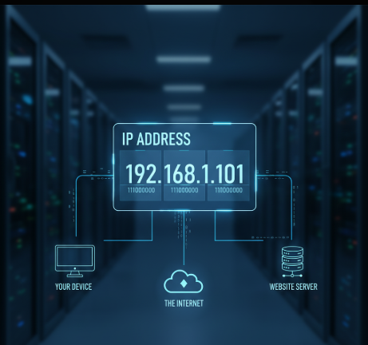
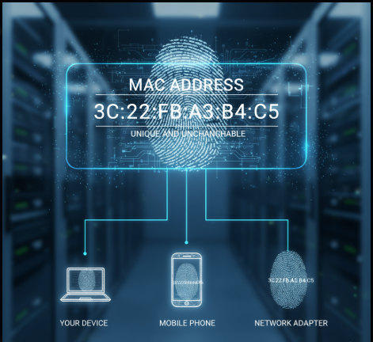
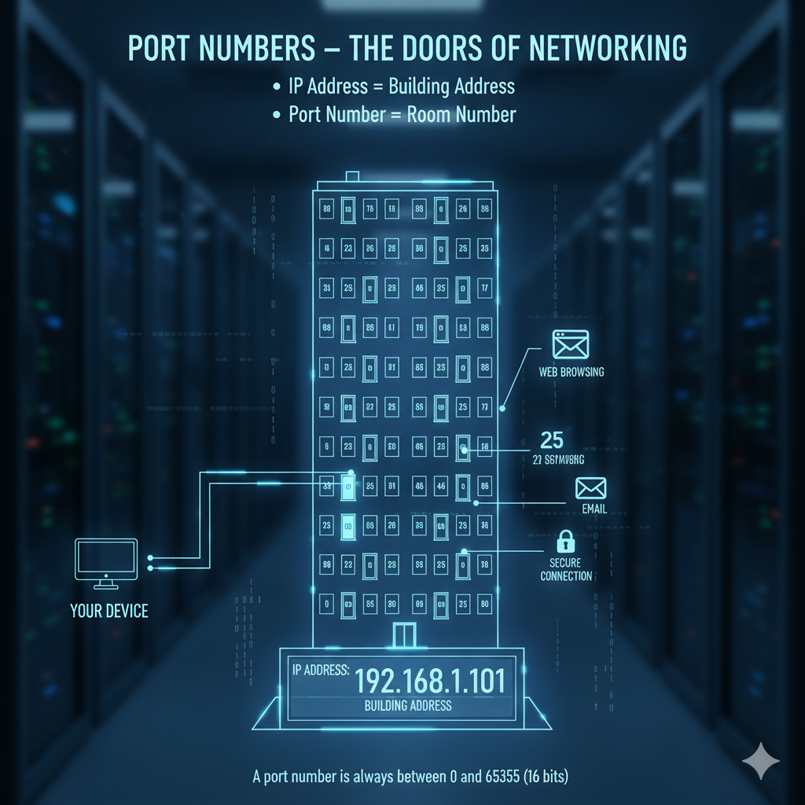

🌍 How Does the Internet Work?
When we think of the internet, it often feels like magic — type something into Google and results instantly appear. But in reality, the internet is just a series of smart, logical solutions to very simple problems. Let’s break it down step by step.
🖥️ Principle 1: The Need to Share Information

🌐 Principle 2: The Problem of Scale
📡 Principle 3: Connecting Multiple Networks
📍 Principle 4: Finding the Right Computer
📦 Principle 5: Reliable Data Transfer
Imagine two computers: Computer A and Computer B. You have some data on Computer A and want it on Computer B.
The old-fashioned way would be to copy the data onto a USB stick and physically carry it over. That works, but it’s slow and impractical. Instead, we can connect the two computers directly using a cable (like ethernet or fiber optic).
Once connected, the computers can send signals as 1s and 0s (high voltage for 1, low voltage for 0). This is the most basic form of networking — a direct link between two devices.
Two computers are easy to connect. But what happens when we have 10, 50, or 100 computers? If each one needed a separate cable to every other computer, the number of cables would explode.
The solution is a Switch. Each computer connects to the switch, and the switch forwards data only to the right computer. This makes communication efficient and organized. This is what we call a Local Area Network (LAN), commonly used in homes and offices.
Now imagine two separate offices, each with its own LAN. How can computers in one office talk to computers in the other? Running a cable from every machine in one office to every machine in the other is impossible.
Here’s where the Router comes in. A router connects one network to another and knows how to send data between them. By linking many routers together across the world, we create a network of networks. This massive system of connected networks is what we call the Internet.
Now that we have millions of devices connected, how does your computer find the one it needs to talk to?
Just like houses have unique postal addresses, every device on a network has a unique IP Address. For example, 172.217.16.142 is one of Google’s addresses.
Routers look at the destination IP address and forward the message step by step, or “hop by hop,” until it reaches the right device.
Let’s say you want to send a large video file over the internet. Sending it all at once would slow everything down and be risky — if even one part got corrupted, you’d have to resend the whole file.
The smarter way is to break the data into small, numbered pieces called Packets. Each packet contains a bit of the data, along with the sender’s IP, the receiver’s IP, and a sequence number. Packets may travel different routes, but once they reach the destination, they’re reassembled in the correct order.
This system of breaking, sending, and reassembling data is managed by TCP/IP (Transmission Control Protocol / Internet Protocol) — the backbone of the internet.
🧾 IP Address Basics
🔹 IPv4
- 32-bit number, written as 4 sections (0–255).
- Example: 192.168.1.1.
- Max: ~4.3 billion addresses.
- Problem: Not enough for today’s billions of devices.
🔹 Public IP
- Your network’s global identity on the internet.
- Unique worldwide.
- Given by your ISP.
- Example: Google servers, Netflix servers, your router.
🔹 Private IP
- Used inside your local network (home/office).
- Not globally unique.
- Assigned by your router.
- Reserved ranges:
- 10.x.x.x → big networks
- 172.16.x.x – 172.31.x.x → medium networks
- 192.168.x.x → home networks
🔹 IPv6
- 128-bit address (solution to IPv4 shortage).
- Huge capacity: 2^128 addresses.
- Written in hexadecimal with colons.
- Example: 2001:0db8:85a3::8a2e:0370:7334.
🏷️ MAC Address
-

Every device capable of connecting to a network has a permanent, built-in identifier called a MAC Address. Unlike IPs (which can change), MAC addresses are fixed.
They’re usually written in hexadecimal format, like:
3C:22:FB:A3:B4:C5
Think of it like your device’s fingerprint — unique and unchangeable.
🌐 Port Numbers – The Doors of Networking
-

Well-Known Ports (0 – 1023)
- 80 → HTTP (websites)
- 443 → HTTPS (secure websites)
- 22 → SSH (logging into servers)
- 53 → DNS (domain name lookups)
Registered Ports (1024 – 49151)
- 3000 → React / Node.js development server
- 3306 → MySQL database
- 27017 → MongoDB (MERN stack)
- 8080 → Alternate web server port
Dynamic / Private Ports (49152 – 65535)
- Example: when you open google.com, your browser picks a random free port from this range just for that session.
- You never configure servers to use these – they’re chosen automatically by your system.
Think of your computer like a huge apartment building. The IP address is like the street address of the building – it tells people where the building is.
But inside that building, there are thousands of rooms where different activities happen – chatting, browsing, gaming, streaming, etc. These rooms are identified by Port Numbers.
👉 In short:
IP Address = Building Address
Port Number = Room Number
So when you connect to a website, you’re not just finding the right building (IP address), you’re also knocking on the right door (port number) so the correct service answers you.
💡 A port number is always between 0 and 65535 (that’s because it’s stored in 16 bits).
🏷️ Categories of Port Numbers
The internet authorities divided ports into 3 groups to keep things organized:
These are the VIP doors – reserved for the most important services.
For example:
These are the common doors used by apps and databases. They are widely used but not as “global standards” as the first group.
Examples a developer should know:
Good news: you don’t need admin rights to use these ports.
These are the temporary side doors your computer uses when it talks to servers.
🌍 DNS – The Internet’s Phonebook
Check if we already know it
- First, your browser checks its own memory.
- If not there, your operating system checks its cache.
- If still not found, your router might have it saved.
- If found anywhere → done! ✅
Ask the Resolver (your ISP or Google DNS/Cloudflare)
Resolver goes up the hierarchy
- Root Servers: The resolver first asks, “Hey, who handles .com websites?”
- TLD Servers: Then it asks the .com servers, “Who knows about google.com?”
- Authoritative Servers: Finally, it reaches Google’s own servers, which reply: “Yes, google.com lives at 142.250.72.206.”
Answer comes back
- Resolver caches the answer for some time (TTL).
- Sends the IP back to your computer.
Browser connects
Now imagine you want to call your friend “Rahul,” but instead of remembering his phone number, you just type his name in your phone. Easy, right?
That’s exactly what DNS (Domain Name System) does. It converts human-friendly names like google.com into machine-friendly IP addresses like 142.250.72.206.
Without DNS, we’d have to memorize numbers for every website 😵.
How DNS Works (Step by Step)
If no one locally knows the answer, your computer asks a DNS Resolver. This is like calling a librarian who promises to find the exact number for you.
Finally, your browser connects to 142.250.72.206 on port 443 (HTTPS) and loads the page. 🚀